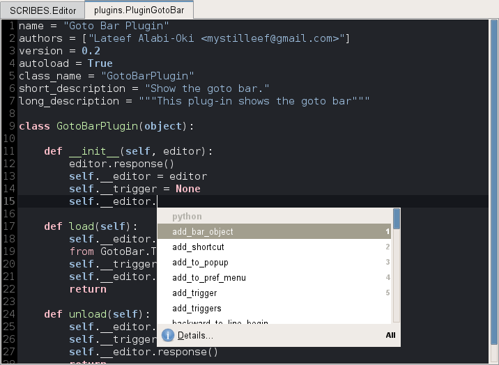

Python plugin¶
Strictly for the sake of this plugin I started Snaked’s development. It requires rope for it to work.
Pretty editor title formating¶
Changes tabs’ display, uses package modules names, instead of filenames. Example: module.py or __init__.py is shown as package.module or package. It’s a very useful extension to distinguish similar file names and is a must have for every Pytonista.
Goto Definition¶
Default F3 shortcut navigates to symbol definition under cursor. It also handles symbols in quotes and comments. Like:
def func(param):
"""Some function
:param param: Some param of some_package.some_module.SomeClass
"""
pass
To see param class you need to place cursor on SomeClass and hit F3. Or if rope can infer param type you can place cursor there and hit F3.
Code completion¶
Snaked uses gtksourceview2’s completion framework. I just implemented the python provider. Most of the UI work is done by gtksourceview.
<ctrl>space activates a popup. There is support for showing pydocs (docstrings) using Details... button.


Type hints¶
This is the most exiting Snaked part. It allows you to provide additional type information to rope for a better type inferring and as consequence, better completion and code navigation.
Hints that can be provided:
- Function/method param types.
- Function/method return type.
- Replacing module attribute.
- Adding attributes to class.
Usage¶
There is special file to configure hints: .ropeproject/ropehints.py in your project root. It is an ordinary python file which must define the function init(provider), where provider is default project hint provider with build-in scope matcher and doc string hint support.
Note
Without any configured hints you still have the doc string hint provider.
Snaked’s hint providers¶
Snaked’s scope matchers¶
Django hints¶
Look at the image:

Cool, isn’t it? Simply add django support into your .ropeproject/ropehints.py:
def init(provider):
from snaked.plugins.python.djangohints import add_django_support
add_django_support(provider)
Note
Django hints were developed against django 0.97 codebase (yeah, I maintain such old project) and not tested on current versions. Get me know if you encounter any issues.
PyGtk hints¶
Image again:

Who is there? BuilderAware is a simple wrapper that delegates missing attributes to GtkBuilder. Window is BuilderAware class constructed from glade file. vbox1 is a GtkVBox defined in glade file and PyGtk hint provider resolves class attributes from it.
Besides that, goto definition (F3) opens glade file and place cursor at vbox1 declaration.
And more, if there are any signal handlers in glade file their parameters will also be resolved.
You only need to add pygtk support and assign glade file to class via ropehints.py:
def init(provider):
from snaked.plugins.python.pygtkhints import add_gtk_support
add_gtk_support(provider)
And declare the glade filename in class’ docstring:
class Window(BuilderAware):
"""glade-file: main.glade"""
...
Unit testing¶
This is a holy grail of modern development. Honestly, I didn’t plan to integrate unit testing support in snaked – running py.test from terminal completely satisfy my requirements, but during heavy tests reorganization I realized too much time was spent for snaked/terminal switching and searching failure’s causes in py.test output.
This plugin is completely based on py.test capabilities. The latest version (2.0) is required.
Unit testing features:
- Test framework agnostic. A killer feature, really – one shoot and three bunnies are dead: py.test itself, unittest and nose.
- Test environment configuration is done by ordinary conftest.py and pytest.ini.
- Common GUI for testing process which can be founded in other IDEs.
- Tests output is not messed and can be seen for each test individually (thanks to py.test).
- Quick jump to test failure cause. Also one can navigate through traceback without relying on mouse clicks, fast ant easy.

Shortcuts¶
- <ctrl><shift>F10 runs all tests in project.
- <ctrl>F10 runs tests defined in scope under cursor. It can be test function/method, test case class or whole module.
- <shift><alt>x re-runs last tests.
- <alt>1 toggles test result window.
- Enter in test list view jumps to failed test line.
- <alt>u/<alt>n mnemonics navigate through traceback.
Running django tests¶
At first you need to configure django environment. Create conftest.py module in the root of you project:
import os
os.environ['DJANGO_SETTINGS_MODULE'] = 'settings'
Then you should tell py.test which modules are tests proper. Create pytest.ini file in project root:
[pytest]
python_files = tests.py
That’s all. Now you can run django tests with py.test and snaked.